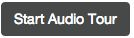

Using Repetition with Images¶
Pictures on a computer are broken up into little bits called pixels, for picture (pix) elements (els). These are laid out on a grid, from left to right (horizontal or x dimension) and top to bottom (vertical or y dimension).
Pixels are quite small. Even this small picture below has 180 columns and 240 rows of pixels:

Each pixel has a color associated with it: An amount of redness, an amount of greenness, and an amount of blueness. Let’s remove the red from this picture. Now, there are lot of lines in the program below, but fortunately, you can ignore most of them. The Audio Tour explains the important lines. Press  to hear the audio tour explanation. When you run this program it may take several minutes to show the changed picture.
{kind=link}
(Image_Remove_Red)
The program above can take several minutes to execute on the arch.jpg picture. But we’re not stuck using just the arch image. We can use smaller images which will execute more quickly.
 Teachers Notes: Understanding Image Representation¶
Teachers Notes: Understanding Image Representation¶
Understanding images requires understanding a set of abstractions:
- Pictures are made up of little pixels, laid out on an (x,y) grid.
- Each pixel contains a color.
- Each color has a red part, a green part, and a blue part.
- Each color part is actually a number between 0 and 255.
There are some excellent CS Unplugged activities for understanding image and color representation.
A Library of Images¶
Because of the way that web page images work, you can only manipulate pictures here that have been pre-loaded to this web-server. Modify the program above to try out the code on some of these other images by changing line 4 above.
| beach.jpg | baby.jpg | vangogh.jpg | swan.jpg |
 |  |  |  |
| puppy.jpg | kitten.jpg | girl.jpg | motorcycle.jpg |
 |  |  |  |
| gal1.jpg | guy1.jpg | gal2.jpg |
 |  |  |
A Pattern for Image Processing¶
As we have seen with turtles and words, there are some general patterns in the programs that we write. With turtles, there was a polygon pattern (based on the Total Turtle Trip Theorem). With words and numbers, there is the accumulator pattern.
The image processing pattern looks like this. This program actually doesn’t do anything to the image at all. We’re just describing the pattern.
(Image_Pattern)
Here are our six steps:
- STEP 1: USE THE IMAGE LIBRARY. We need to import the image library.
- STEP 2: PICK THE IMAGE. We pick a particular image from our library by specifying it inside of the parentheses and double quotes.
- STEP 3: SELECT THE DATA. This example selects every pixel, that is “for all x values in the width of the image” and “for all y values in the height of the image”.
- STEP 4: GET THE DATA. You could always use the STEP 4 lines just as they are above, but you might be able to make it shorter if you wanted. If you only needed red and were going to set the green and blue to zero, you don’t have to get the green and blue.
- STEP 5: CREATE THE COLOR. This is the part that you will most often change. Here’s where you create a new color with red, green, and blue components.
- STEP 6: CHANGE THE PIXEL. Normally, you put the color back at the same x and y coordinates. But you might change that.
Changing Step 5: Increasing and decreasing color values¶
First example: Let’s change STEP 5, so that we decrease the red by 50%.
(Image_Decrease_Red)
We can increase the red in a similar way. Let’s change STEP 5, so that we increase the red by 150%.
(Image_Increase_Red)
Changing Step 6: Changing where we put the colors¶
Now, let’s change Step 6. Let’s change where we put our new color. Here is a subtle change from our original template – look at Step 6 and compare it to other programs we have written here.
(Image_Location_Change)
This one does a little math with the x and y.
(Image_Flip_Both)
Changing Step 3: Changing which data we use¶
We can also change which part of the picture we read and manipulate.
(Image_Negate_Quarter)
What happens if we skip every other x and y as we manipulate the colors? Maybe make the green 255 and the blue 0?
(Image_Every_Other)
Let’s try side-to-side copying.
(Image_Copy_Left)